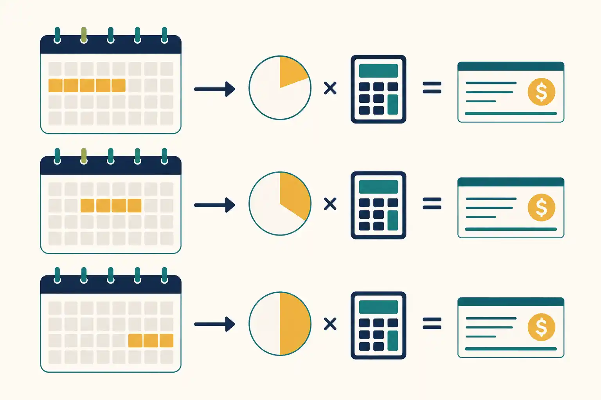

Calculo Volta de Ferias 2026
Por que o salario ficou menor, como calcular o valor correto e como verificar seu holerite passo a passo.
Por Que o Salario Fica Menor na Volta das Ferias
O pagamento de ferias que voce recebeu antes de sair nao foi um bonus. Foi um adiantamento do salario que cobre os dias de descanso. O Art. 145 da CLT exige esse pagamento ate dois dias antes do inicio das ferias. Quando o mes do retorno chega, a folha de pagamento cobre apenas os dias que voce trabalhou depois de voltar.
Os dois valores juntos (adiantamento de ferias + salario proporcional do retorno) somam exatamente um mes completo mais o terco constitucional. A diferenca e que chegam em momentos diferentes. O terco ja foi pago nas ferias e nao aparece de novo no holerite do retorno.
A Formula do Salario Proporcional no Retorno
Formula do Salario na Volta das Ferias
O ponto que quase todo mundo erra: o divisor. Quando o mes tem 31 dias, use 31. Quando tem 28 (fevereiro), use 28. Usar 30 fixo num mes de 31 dias gera pagamento incorreto.
Exemplos Reais Para Cada Cenario
Todos os exemplos usam salario bruto de R$ 3.000,00.
Cenario 1: 15 dias de ferias em abril (30 dias)
Saiu dia 1, voltou dia 16 | 15 dias trabalhados
Cenario 2: 20 dias de ferias em marco (31 dias)
Saiu dia 1, voltou dia 21 | 11 dias trabalhados
Se o DP usasse 30 como divisor aqui: R$3.000 / 30 x 11 = R$1.100. Diferenca de R$35,48 que gera passivo trabalhista ou prejuizo ao trabalhador.
Cenario 3: 30 dias de ferias (mes inteiro)
A folha do mes de ferias mostra R$ 0,00 de saldo de salario. Nao e erro. O mes inteiro foi coberto pelo pagamento antes de voce sair. O mes seguinte comeca normalmente com salario integral.
Cenario 4: Ferias cruzando dois meses
15 dias: dia 20/set a 4/out | Salario R$ 3.000
Tres pagamentos no total: salario proporcional de setembro, pagamento de ferias (15 dias + 1/3), e salario proporcional de outubro. Sem sobreposicao, sem lacuna.
Ferias Fracionadas: Um Retorno Para Cada Periodo

Com a Reforma Trabalhista (Lei 13.467/2017), as ferias podem ser divididas em ate 3 periodos. Cada periodo gera um retorno separado com calculo proporcional independente. O divisor muda conforme o mes e as aliquotas de INSS/IRRF podem ser diferentes em cada retorno.
3 Periodos: Salario R$ 3.000
Como Verificar Seu Holerite de Retorno
4 Passos Para Conferir
Se encontrar erro: leve o calculo por escrito ao DP. Sem correcao: sindicato, Ministerio do Trabalho ou advogado trabalhista.
Vale-Transporte, 13o e Beneficios no Retorno
Vale-transporte: durante ferias nao ha credito nem desconto de VT. No retorno, desconto proporcional de 6% apenas sobre os dias trabalhados.
Vale-refeicao/alimentacao: segue a convencao coletiva. Algumas categorias garantem VA/VR integral nas ferias, outras suspendem. Consulte seu sindicato.
Adiantamento do 13o: se solicitou a 1a parcela junto com as ferias, ela ja foi paga. Nao aparece no holerite do retorno. O IRRF sobre o 13o so e retido em dezembro.
Plano de saude: nao sofre interrupcao. Desconto permanece normal.
Rescisao e Ferias Proporcionais
Na demissao sem justa causa antes de completar o periodo aquisitivo, o trabalhador recebe ferias proporcionais com terco constitucional. Na justa causa, mantem as vencidas mas perde proporcionais. Veja o guia completo de ferias na rescisao.
Perguntas Frequentes
Conclusao
O calculo do salario apos ferias segue uma unica formula: salario bruto dividido pelos dias reais do mes, multiplicado pelos dias trabalhados apos o retorno, menos INSS e IRRF progressivos. O espelho de ponto, a convencao coletiva e o DP sao os tres recursos para verificar antes de qualquer outra coisa. Use a calculadora de ferias para simular seu cenario e veja tambem o calculo de ferias por periodo.
Simule Seu Salario na Volta das Ferias
Insira seu salario e os dias de ferias para ver o valor liquido exato do holerite de retorno.
Usar a Calculadora